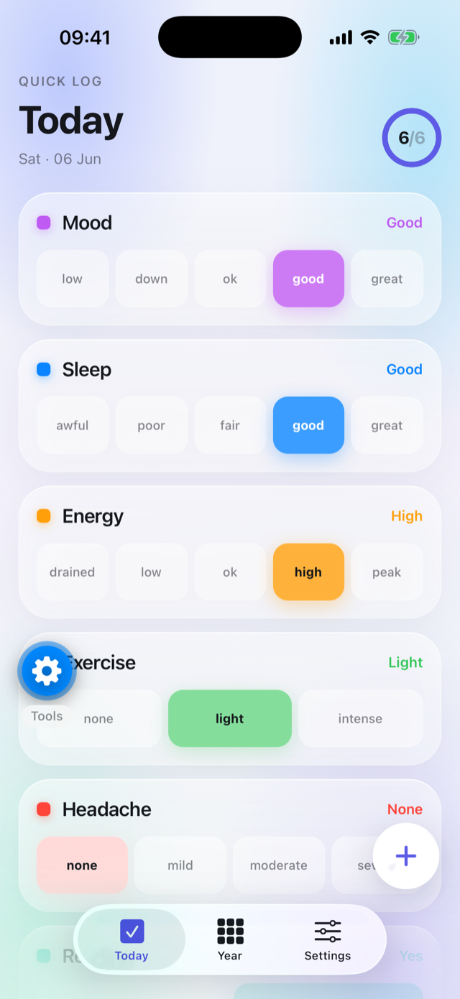

1
Log your day in seconds
Define the topics you care about — each with a scale that fits, from a simple yes/no to five levels like “low → great.” Then one scrollable screen lists them all; tap to record the day. Nothing is pre-selected, so “not logged” is never mistaken for a real value. A daily reminder nudges you at a time you choose.
